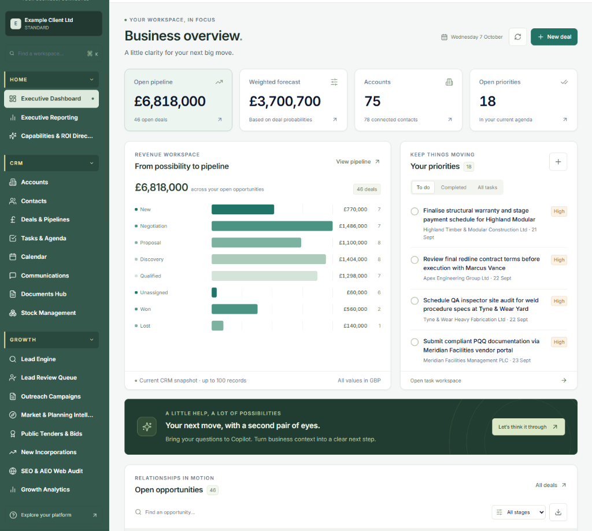

Human-led, technology-supported: Technology supports the research. Human judgement drives the action. Power-Up Intelligence provides market clarity across candidate availability, competitor movements and account whitespace — governed under strict UK GDPR compliance.
Clearer market visibility across hiring and growth.
We combine specialised sector intelligence with human research to give leaders early visibility of talent movements, competitor reorganisations and commercial opportunities before the rest of the market reacts.
Market mapping & talent availability
Real-time identification of active and passive candidate pools across UK technical, commercial and leadership tiers.
- Comprehensive candidate pool mapping
- Regional availability indicators
- Passive candidate tracking
- Specialist skill availability insights
Competitor movement & structure insights
Monitoring organisational changes, executive transitions and team expansion across rival firms in your sector.
- Leadership movement tracking
- Team restructuring alerts
- Competitor headcount expansion
- Whitespace talent opportunities
Account whitespace & target identification
Highlighting underserved regional accounts and sector opportunities for commercial business development.
- Regional target account discovery
- Underserved customer segment identification
- Commercial opportunity scoring
- Key decision-maker mapping
Candidate interest signals & timing
Detecting optimal engagement windows when high-performing leaders are open to confidential career discussions.
- Career transition indicator tracking
- Optimal engagement window timing
- Discreet contact protocols
- High-intent candidate matching
Benchmarking & compensation context
Authoritative UK salary, bonus structure and benefits benchmarks across wholesale, engineering and manufacturing.
- Realistic base salary benchmarks
- Commission & bonus package norms
- Regional remuneration variances
- Retention incentive benchmarking
Power-Up Growth Desk
Outsourced lead generation, target account research and campaign execution for commercial teams.
- Target decision-maker research
- Account data enrichment & validation
- Structured outbound campaign support
- Lead qualification before handoff
How we turn intelligence into commercial outcomes.
Explore our four-stage commercial methodology below. Click each stage to see how raw market data translates directly into protected margin, higher conversion, and sustainable EBITDA growth.
Define Objective
We clarify the specific commercial, geographic or talent challenge requiring market visibility — whether expanding a regional branch, filling a critical leadership gap, or conquering competitor whitespace.
- Identify exact target territory postcodes & commercial SIC codes
- Audit competitive threats and margin pressure points
- Set quantifiable EBITDA targets and hiring timelines
Average uncaptured commercial account potential unlocked per defined regional branch territory.
Governed software.
Actionable territory data.
Inspect the five core modules of the Power-Up Intelligence platform. Below are the exact operational explainers, commercial ROI metrics, and fiduciary guardrails derived directly from our live system.

Key business benefits
- Interactive quarterly revenue forecasts
- Live deal stage tracking & margin analysis
- Immediate executive action agendas
- Account whitespace identification
Operational Value
Provides managing directors and commercial leaders with instant board-level revenue predictability, live deal tracking, and whitespace account expansion.
Executive Dashboard Outcomes & Commercial ROI
Commercial outcomes you will get
Real-time revenue forecasting, pipeline velocity, weighted deal conversion & priority agendas. Eliminates stale offline spreadsheets.
Operational Purpose / What It Does
Live visibility of open commercial pipeline (£6.8M+ tracked in real-time), weighted win probabilities, deal velocity, and priority agendas. Eliminates stale offline spreadsheets.
Fiduciary Standard
Ensures 100% board transparency with strict tenant data isolation, zero unverified estimates, and audited EBITDA projections.
Power-Up Growth Desk
For businesses seeking proactive commercial outreach alongside talent intelligence, the Power-Up Growth Desk provides structured lead generation, target account research and campaign execution. We map target decision-makers, enrich lead data, and support outbound growth strategies without increasing internal headcount.
Measured, compliant and human-led.
All data and intelligence are processed in compliance with UK GDPR and data protection standards. Technology is used exclusively to assist research, identify signals and support human decision-making. No candidate assessment, selection or client engagement is automated without expert human oversight.